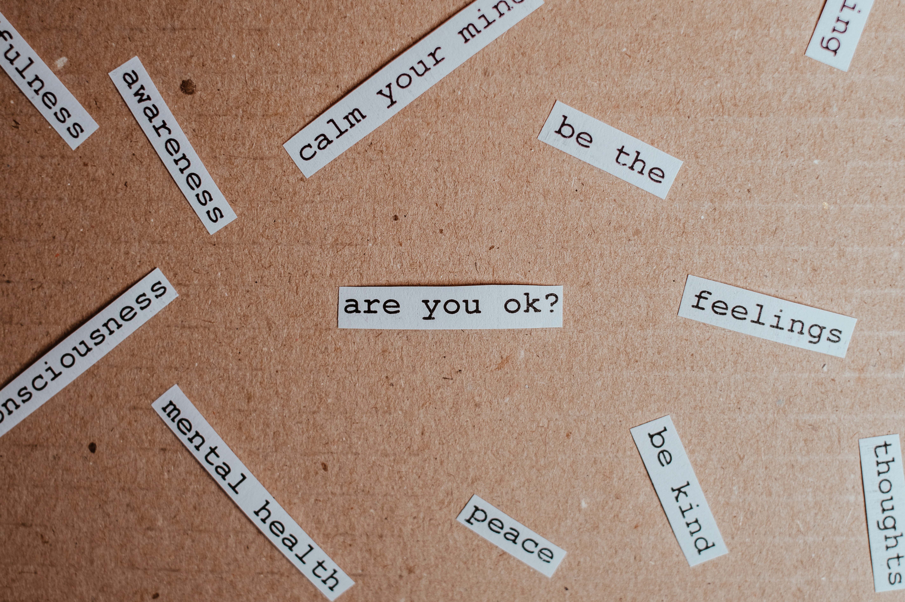

1 / 5
Each of us has something we are dealing with something...balancing life, our goals, emotions, and the past as well.
2 / 5
Reflecting on memories, some painful and others valuable lessons.
3 / 5
There is hope in all of this...
4 / 5
Taking the 1st step can be challenging
5 / 5

It is ok not to be ok...you can now choose the best path for your healing.